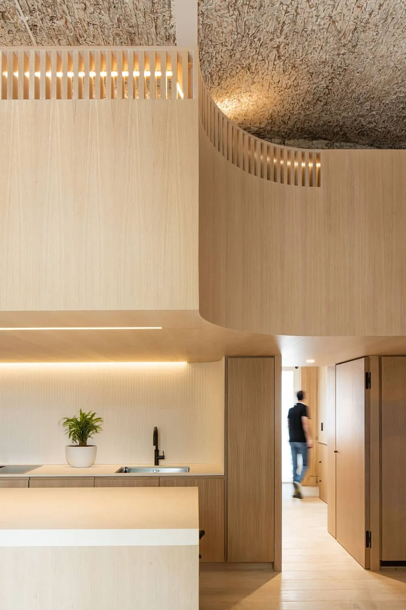
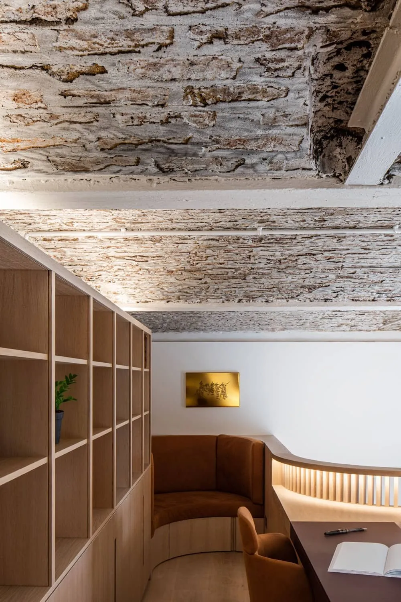
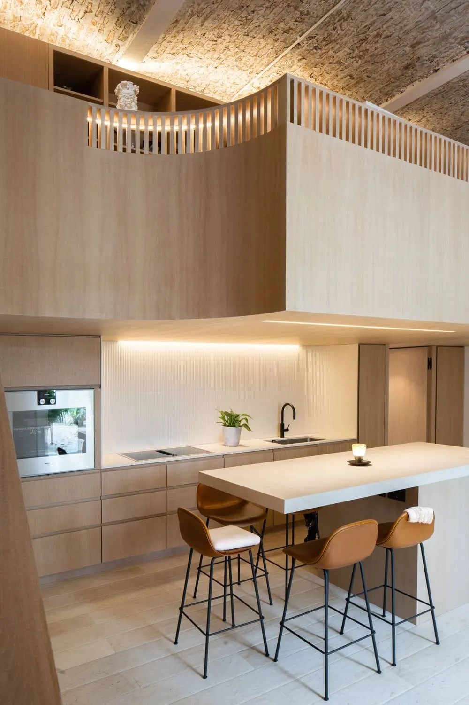
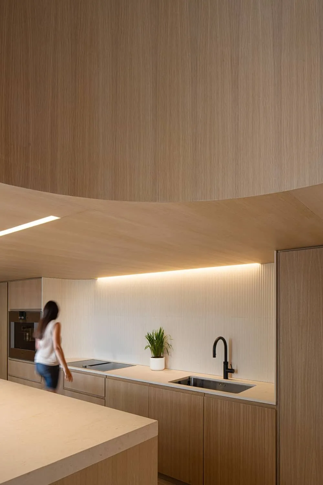
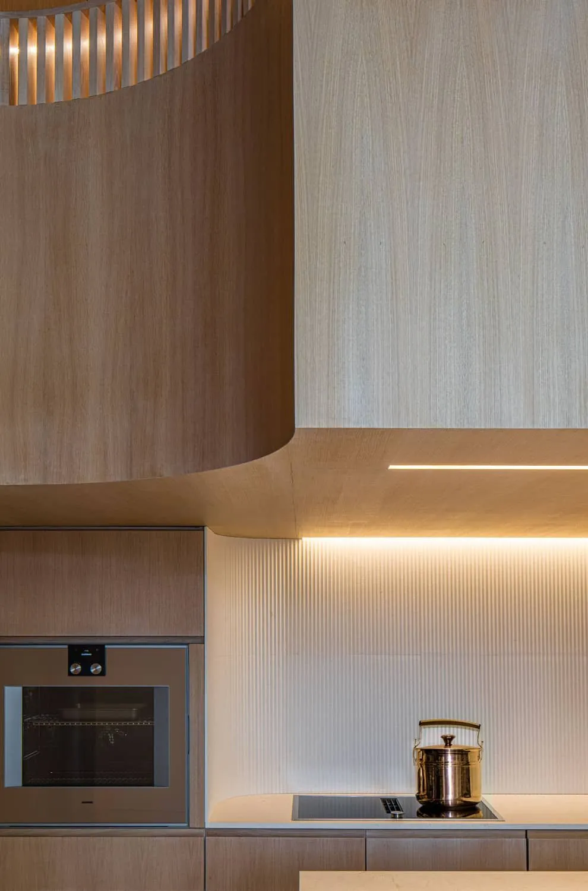
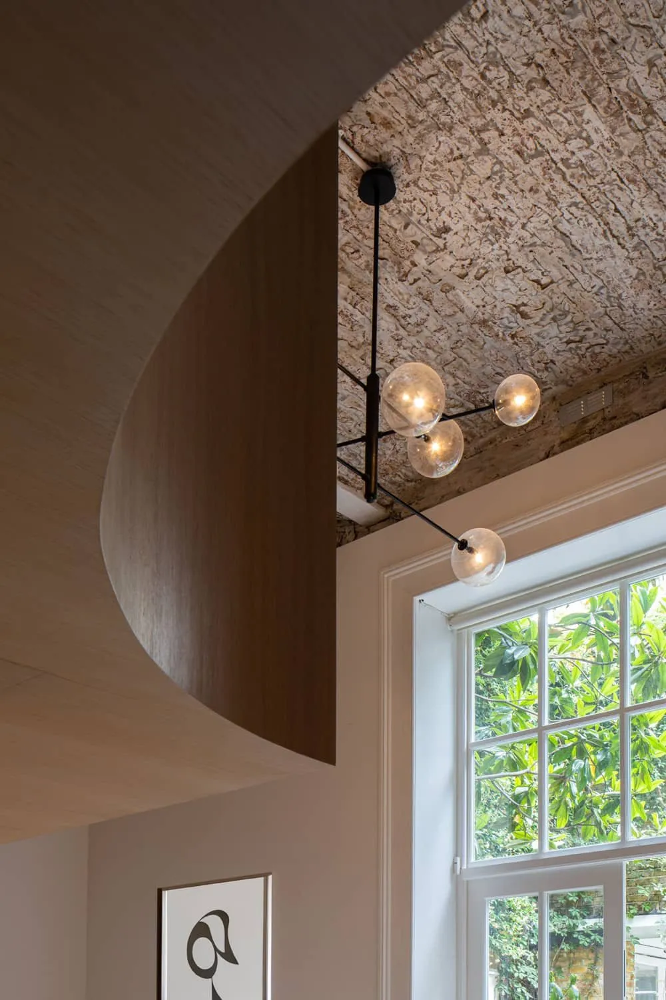
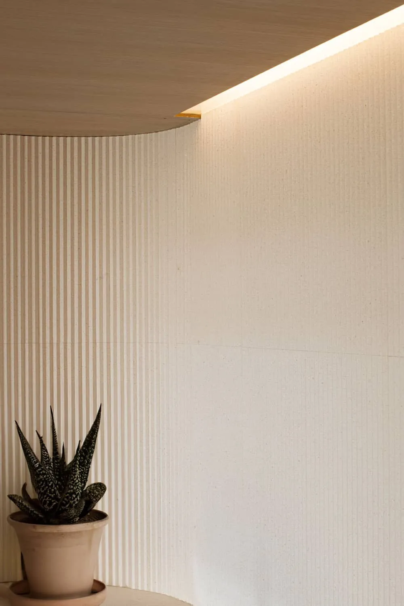
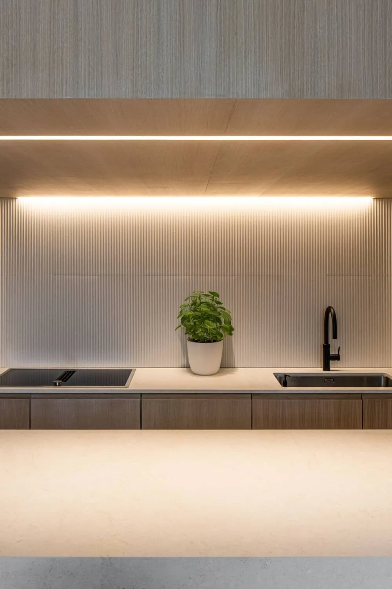
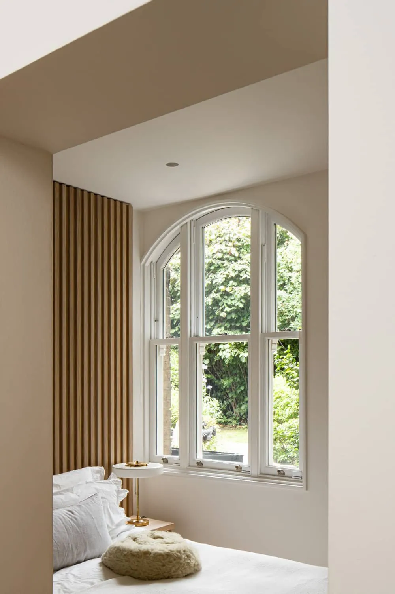

Arch Study
A post-pandemic retrofit of a home office and guest suite inside a historic Notting Hill structure, working with the existing brick arches and vaulted ceiling rather than against them.
Working with the arches.
The site is a historic structure in a Notting Hill conservation area, stripped back to its brick arches and vaulted ceiling. The brief, arriving in the middle of the shift to working from home, asked for a small, useful dual-purpose space: somewhere to host work and somewhere to put a guest overnight.
The ground floor is a kitchen and sitting room with a guest bedroom and bathroom behind, kept simple so the existing architecture does the talking. A split-level mezzanine sits above as the office, with a long oak desk that was built in place over three months.
The new joinery is restrained — fluted oak panelling in the bedroom, a fluted stone backsplash in the kitchen, curved corners where the joinery meets the brick — so it sits inside the older structure as something soft rather than competing with it.






"The desk was made in the room. Three months of cabinet-making, and now you can't tell where the building ends and it starts."
Studio



What it's made of.